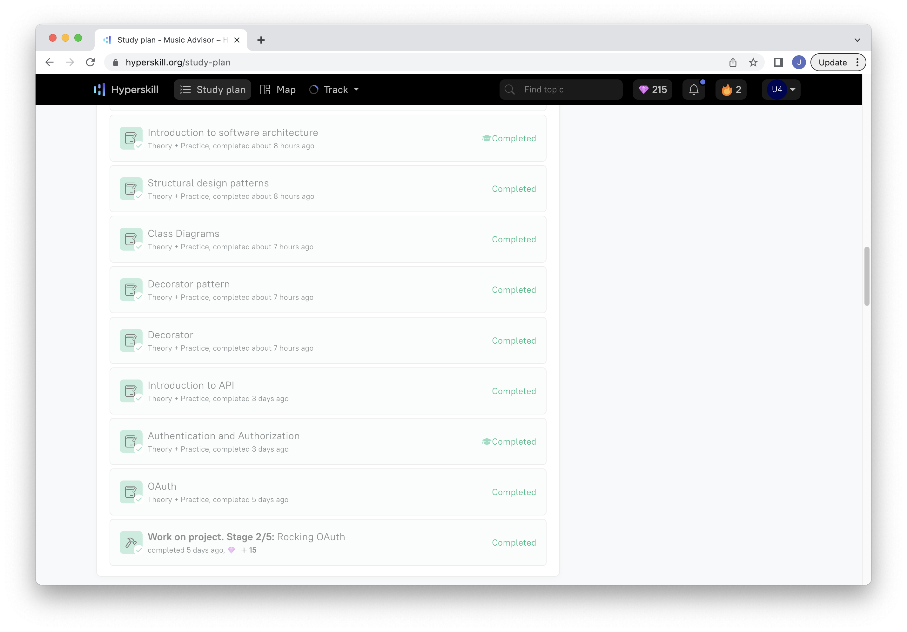

Week 08: Hyperskill Part 1
(June 5 - June 10) Music Advisor Online Course
I must admit that I was pretty excited to start the Hyperskill module, most of what I knew about software prior to entering the apprenticeship program I learned in online platforms like Coursera, Udemy and Khan Academy. So at least on paper it seemed like I'd be at home in the Hyperskill platform, things didn't go as smoothly as I'd have hoped though.
The first sign that something was different with Hyperskill was perhaps the project times. Usually when starting out with a new programming language you're told to do (many) short projects in the style of "100 days of code" challenges, but instead we were tasked with three projects that according to the platform took a couple dozen hours to complete each, something that on paper seems like a pretty daunting task. On a related note, the estimates themselves also seem far too optimistic, as I put a week of full time work into the first project and I'm just over the halfway mark it seems.
To be fair though, I can imagine that it's only taking so long for me to work through the project because I'm almost a complete beginner in all things Java, something that should be clear to anyone who looks through the code for my To Do App. In that regard the lessons that are interspersed with the projects have been quite useful, and I can already imagine how much I could improve on that code with what I learned through this week. Just as easily I can also imagine a more experienced Java user or someone with a more formal education skipping through those lessons and finishing the project in half of what it's said to take to complete.
To me the most interesting lessons so far have been those at the end of stage 2/5, until then most lessons were dealing with concepts I already knew except now on Java, but stuff like Software Architecture, Patterns, Class Diagrams, all those are entirely new to me, only having heard about them without actually having an understanding of what they were and why they were useful.
Uploaded on June 11, 2023